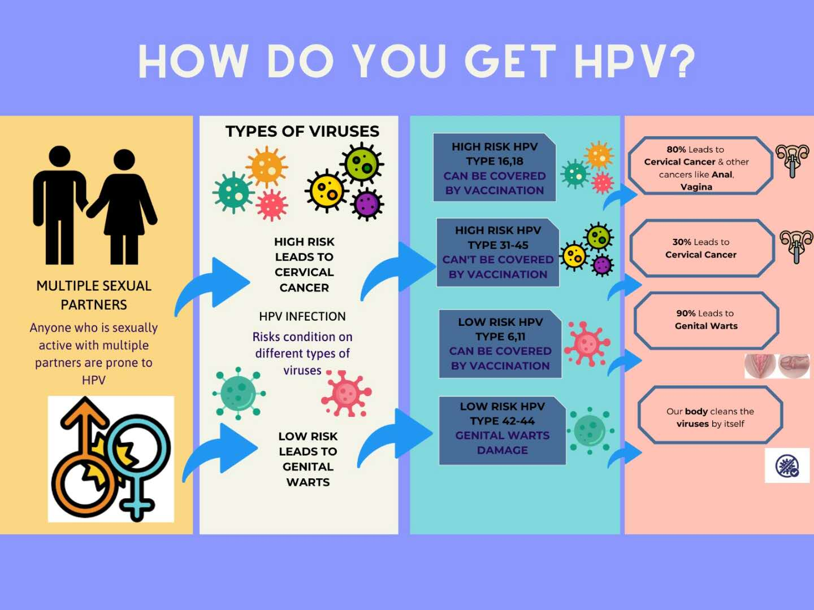
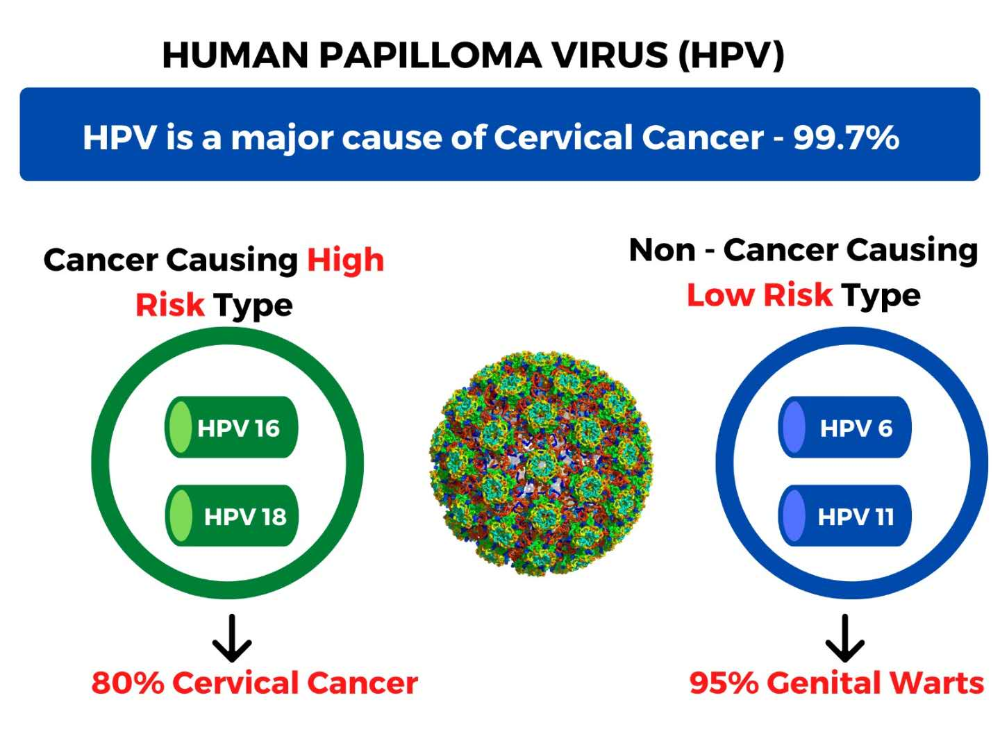

What is HPV?
HPV is very common. It is estimated that up to 80% of people in Australia have HPV at some time in their lives. Many people who have HPV have no idea that they have been exposed to the infection.
Most HPV infections don’t lead to cancer. But some types of genital HPV can cause cancer of the lower part of the uterus that connects to the vagina (cervix). Other types of cancers, including cancers of the anus, penis, vagina, vulva and back of the throat (oropharyngeal), have been linked to HPV infection.
The new national cervical screening program tests women aged 25 to 74 for the HPV infection every 5 years. The test is looking for the 15 high risk HPV types which could develop into cancer in the future.

Symptoms
Genital Warts
Genital Warts appear as flat lesions, small cauliflower-like bumps or tiny stemlike protrusions. In women, genital warts appear mostly on the vulva but can also occur near the anus, on the cervix or in the vagina.
Common Warts
Common Warts appear as rough, raised bumps and usually occur on the hands and fingers. In most cases, common warts are simply unsightly, but they can also be painful or susceptible to injury or bleeding.
Plantar Warts
Plantar Warts are hard, grainy growths that usually appear on the heels or balls of your feet. These warts might cause discomfort.
Flat Warts
Flat Warts are flat-topped, slightly raised lesions. They can appear anywhere, but children usually get them on the face & Women tend to get them on the legs.
Causes
If you’re pregnant and have an HPV infection with genital warts, it’s possible your baby may get the infection. Rarely, the infection may cause a noncancerous growth in the baby’s voice box (larynx).Warts are contagious. They can spread through direct contact with a wart. Warts can also spread when someone touches something that already touched a wart.

Risk Factors
- Age
- Number of Sexual Partners
- Weakened Immune systems
- Damaged Skin
- Personal Contact
- More information
Visualization Resources
Graph 1: Age-specific rates (number per 1,000 women screened) of women with high grade cervical abnormality detected, by age, 2007 to 2016
Link to that graph for more details.
Graph 2: Incidence and age-standardised rates of cervical cancer, by age, 1982 to 2014
Link to that graph for more details.
Graph 3: Age-standardised rates (hospitalisations per 100,000) of cervical cancer and precancerous lesions.
Link to that graph for more details.
Graph 4: Number of deaths and mortality rates (deaths per 100,000) for cervical cancer, 1982 to 2015
Link to that graph for more details.
Human Papillomavirus (HPV) Check
Regular health check can help find problems early. They also can help find problems early, when your chances for treatment and cure are better. By getting the right health services, screenings, and treatments, you are taking steps that help your chances for living a longer, healthier life.
Click here to take a online HPV risk quiz.
Next to HPV Types